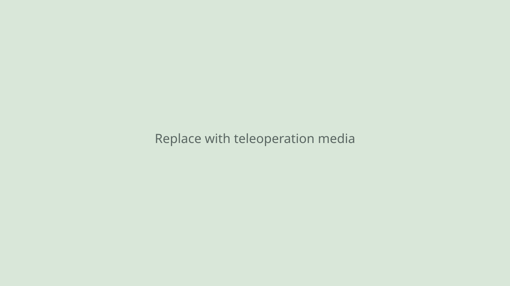

Teleoperation demo 01
Describe the task and setup.
Research paper · Project page
Videos and images from robotic teleoperation.
1 Department of Engineering, University of Cambridge, Cambridge, UK
* Corresponding author
This work was supported by the Engineering and Physical Sciences Research Council and AgriFoRwArdS CDT [EP/S023917/1].
01 / In action
Describe the task and setup.
Describe the task and setup.
Describe the task and setup.
02 / Gallery

03 / Overview
State-of-the-art robot manipulation models rely on imitation learning from large-scale datasets to achieve strong generalisation and performance. The collection of such datasets typically involves considerable amount of human teleoperation. Existing solutions control robot arm by simply mapping a human operator hand pose onto the robot end effector controlling only 6 degrees of freedom. Increasingly, systems are designed with redundant degrees of freedom for better dexterity in manipulation tasks where the articulation of the whole arm is important. We propose an teleoperation algorithm that enables the intuitive control of the whole articulation of the robot arm. We bridge morphology difference between human and robot arm by leveraging virtual model control enabling the operation of different robot arms using a single algorithm. We demonstrate tasks where null space control is crucial for success. We further demonstrate property of compliance and low latency inherent to our approach enhances task performance. Finally, we show that the data collected can be used to train robotic policies for autonomous contact-rich manipulation.
04 / Reference
If you use this work, please cite the paper:
@inproceedings{warmt2026,
title = {WARM-T: A Whole Arm Teleoperation Framework for Dexterous Manipulation and Robot Learning},
author = {Liyou Zhou and Omar Faris and Sebastian Pattinson and Fulvio Forni},
booktitle = {Conference or Journal},
year = {2026}
}Update this BibTeX entry with the paper's final title, author list, venue, and publication year.